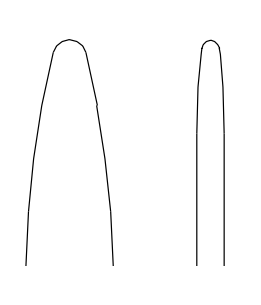
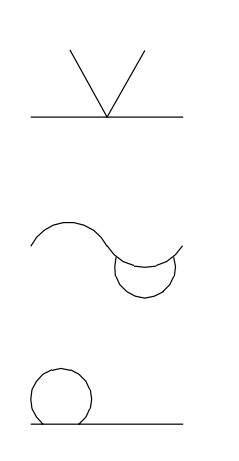
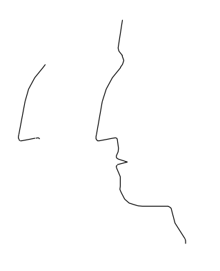
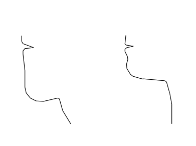

Беседа 3300 от 3877 · Беинса Дуно
Проводници
„Отче наш“
„Фир-фюр-фен“
Прочете се темата „Какво разбирам аз за светлината“.
Пишете темата „Разликата между животните и растенията“.
Трябва да четете малко. Някой път седите и мъдрувате. Всички хора са все философи от своето гледище. Светът страда от философия. Аз какво разбирам: туй, което разбирате, е вярно заради вас, не е вярно заради другите. Сега под думата вярност какво разбирате? Или какво разбирате под думата надежда, под думата топлина? Или какво разбирате под думата любов?
Някои от вас се срамувате да кажете, че обичате, защото, щом кажете, че обичате, ще ви се яви такава идея – някой път някои хора, като говорят за любовта, се срамуват да кажат, че обичат […], както някой се срамува да каже, че обича да краде. Не смее да каже: „Аз обичам да крада“, понеже хората ще си съставят особено мнение. Като говорите за любовта, имате такова чувство на страх, като че е кражба. Или някой път, като говорите за любовта, усещате, че сте се унижили. Обичате някого, и се усещате унижен. Това не е никаква любов, това е кражба. Вълкът се ядосва, когато не може да хване една овца. Котката, когато не може да хване някоя птичка, мечи. Ти я съжаляваш – измъчва се. Някой път, като хване, тя е доволна. Кое е по-хубаво в дадения случай? В първия случай, когато котката мечи, е хубаво за птичката. Във втория случай, когато котката не мечи, е хубаво за котката.
Аз правя една аналогия сега: когато вие страдате в света, разбирам, че някое желание не е постигнато. Вие сте котката, която мечи. Някой път, когато се радвате, вие сте пак котката, която е хванала птичката. Кое е по-хубаво – да страдате или да се радвате? Някой път, когато тебе ти е приятно, че си бръкнал в джоба на някого, онзи, на когото си бръкнал, хич не му е приятно. Ти, като си попипаш джоба, казваш: „Хубаво стана.“ Вие казвате, че има престъпление. Тогава целият свят е изтъкан от престъпления само. Паякът като хване някоя муха, тя бръмчи, пък той си прави научни изследвания. Вие гледате и се смеете на това. Пред вашите очи се върши едно престъпление. Вие какво правите тогава? Когато един паяк хване една муха, вие гледате. Що не вземете участие? Ще носите една пръчка, ще кажете на паяка да остави мухата свободна. Искате някой път да видите колко е силна вашата воля, ще кажете: „Пусни мухата. В мое присъствие не искам да се върши престъпление. Ако не, ще приложа закона.“ Колцина от вас са го направили това? Във вашата стая се вършат престъпления и вие си седите. Вечерно време някоя муха се моли, вие не ѝ помагате. После вие говорите за вашите страдания. Станете, намерете този паяк, кажете му: „Навън!“
Някой паяк влязъл в стаята на вашия ум или в стаята на вашите благородни чувства. Всяка благородна мисъл има своя стаица, особен апартамент си има. Влезе някой паяк, хване някоя мушица там. Вас ви е жал да го изпъдите. Жал ви е някой път да изпъдите някоя лоша мисъл по две съображения: ако речете да я изпъдите, плащате доста глоба. За всяка лоша мисъл човек плаща глоба, понеже тази мисъл се храни и поглъща част от вашата енергия. Запример вземете ония хора, които искат да си отмъстят. Аз бих желал да наблюдавате, да видите къде се образуват известни линии. По лицето има няколко линии. Аз бих желал да наблюдавате. Може ли да намерите тия линии? Човек, който обича да си отмъщава, като го срещате, казва: „Не ме бутай, аз съм отмъстителен.“ Този човек помни, може да се минат десет години, той не забравя.
Казвам, трябва да приложите едно самовъзпитание в себе си: едно възпитание на тялото, едно възпитание на вашите чувства, едно възпитание на ума си. В даден случай трябва да сортирате вашите мисли. Всяка една мисъл трябва да е поставена на мястото. Не може мислите да се поставят на място, ако чувствата не са поставени на място. Не може и чувствата да бъдат поставени на място, ако силите в човешкия организъм не са поставени на място. Запример, ако краката на човека са по-дълги или по-къси, ако ръцете на човека са по-дълги или по-къси, туй ще се отрази върху вашия ум и върху вашето сърце.

Сега може вас това да ви е смешно. Казвате: „Как е възможно този пръст да ни влияе?“ Че ако вие си отрежете двата палеца, знаете ли какво ще стане? Ще изгубите волята си. В старите времена, когато са искали да накажат някой престъпник, отрязвали са им палците. Като им отрежат палците, те изгубват волята си. Ако вашите палци функционират правилно, и волята ви функционира правилно. Някой път не функционират правилно, и волята не може да функционира, вие не можете да изразите волята си. Ако вашият [първи] пръст не функционира правилно, както трябва, благородното чувство на достойнството, на самоуважението не функционира правилно. Съзнанието ви за справедливост, и то не функционира правилно, ако средният ви пръст не функционира правилно. Ако третият ви пръст не функционира правилно, вие не може да се ползвате от хубавото и красивото вътре в природата. Или ако малкият ви пръст не функционира правилно на двете ръце, тогава в практическия живот вие безразборно ще постъпвате. Та казвам, хубаво е човек да има една идеална ръка. Аз не искам да ви казвам каква ще бъде идеалната ръка.
Трябва да изучавате астрологията. Има типове, но и след като изучавате тия типове, има един идеален тип, който съвременните астролози не засягат. Сега искам само да ви наведа да мислите за ръката си. Вие не сте изучавали каква услуга ви правят вашите ръце. Както са свързани с физическия свят, ръцете са свързани с духовните сили. Краката са свързани с физическите сили на човека. Ръцете са свързани с духовните сили на човека, с чувствата му са свързани. Затова, когато краката почнат да боледуват, тялото е в разстройство. Ако започнат ръцете да боледуват, тогава чувствата са в разстройство и човешкият ум, и той е в разстройство. Тогава вече започвате да изучавате.
Всичките разстройства, които стават, ще ги намерите в ноктите. Тези нокти са една написана книга, всичките разстройства са написани. Няма да ви кажа кои разстройства са написани, но всички разстройства са написани на ноктите. Ти по ноктите ще познаеш един човек смел ли е, или страхлив, пестелив или щедър, страхлив ли е, гневлив ли е, ще има ли заболявания на сърцето, ще има ли заболявания на дробовете, ще има ли заболявания на очите. Всичко туй е написано. Тъй щото болезнените състояния се отбелязват, отпечатъци остават. И здравословното състояние се отбелязва. Ноктите са една книга, по която човек може да чете. Ако знае, като погледне ноктите, може да чете. Някой път нали се образуват щастливи петна по ноктите. Казват: „Голям късмет.“ Тези петна са признак на една голяма напрегнатост, едно напрежение на нервната система, едно малко разстройство. Трябва да турите спокойствие, да се премахнат тия петна. Като работите сто и шейсет дена, тия петна ще се премахнат, защото ноктите растат. Сто и шейсет дена взема на нокътя да изхвърли едно петно.
Вие искате да възпитавате света. Най-първо, възпитайте ръката си. Възпитайте дясната си ръка. По някой път вие не искате да дадете работа на вашите ръце. Дайте работа на ръцете си. Дайте работа на вашия пръв пръст, дайте работа на втория пръст, дайте работа на третия пръст, дайте работа на четвъртия пръст, дайте работа на палеца. Сега как можеш да дадеш работа на палеца си? Ти минаваш вкъщи. Има някой предмет паднал или столът е обърнат на земята. Ти минаваш, не вдигаш този стол. (Учителят обърна един стол на дъските.) Ти не вдигаш стола, да не загубиш достойнството си. Като е паднал столът, какво трябва да направиш? Да го вдигнеш. (Учителят вдигна стола, постави го на мястото.) Туй малкото, което ще направиш, то ще се отрази върху тебе. Ти не искаш някой път да вдигнеш стола. Как ще се подигнеш? Някой човек вътре в себе си е паднал като стола, че няма никакво уважение. Усеща се унижен, смачкан. Причината е, че отвсякъде е минавал. Ще туриш стола на мястото. Един ден гледах аз, тук хванали да се бият със столове. Казвам, човек трябва да бъде внимателен.
Сега вие слушате и ще се напълните с една философия, която няма никакво приложение. Изучавате окултните науки, звездите, планетите. Юпитер, Сатурн гледате как са били. Снощи една млада сестра ми разправя. Казва: „Аз като гледам двете звезди Сатурн и Юпитер, които са наблизо, става ми нещо лошо.“ Аз веднага зная защо ѝ става лошо. Казвам: „Ти си прегрешила, че твоите лични чувства не са на място.“ Сатурн ѝ казва: „Ти не мислиш.“ Юпитер ѝ казва: „Ти не почиташ достойнството си, както трябва.“ Като ги види, те ѝ говорят, свива я нещо на сърцето и на ума, не иска да ги гледа.
Някои, като започнат много да гледат в света, не искат да дигнат очите си, не искат да гледат небето. Всичко им е объркано. Като погледнат всичките звезди, те им говорят, казват: „Тъй както живеете, животът ви не е добър.“ Той навел глава надолу, обезсърчил се, отчаял се, нагоре не гледа, надолу гледа. Какво казва тогава земята? „Що живееш? Пукни тази глава, легни в земята, скрий се. Пукни главата си, влез в земята да се скриеш.“ Как ще се освободиш в земята? Като влезеш в земята, ще влезеш в Обществената безопасност. Тогава всяка вечер ще има бой. Всяка вечер ще влиза по един да те бие.
Сега това са общи работи, течения. Не мислете, че когато един човек се поставя на един изпит, е нещо индивидуално. Ти си се поставил на едно голямо течение, вземаш течението на себе си. Туй течение може да те отвлече. Виждаш, една мушица се дави във водата. Ти я гледаш, казваш: „Да си върви.“ Виждаш някоя муха се дави, извадѝ я навън. Навсякъде окажете една услуга. Правиш полза на себе си. Минаваш в гората, виждаш цвете стъпкано. Повдигни го, тури му подпорка. Нека седи нагоре. Ти помагаш на себе си, на своите чувства. Или минаваш покрай някой извор замътен, поизчисти този извор. Законът е: ти ще се ползваш. Всички извори няма да изчистиш, но този извор изчисти, който си видял. Ти ще си помогнеш. Минаваш някой път, някой приятел се обезсърчил, казваш: „Не е моя работа.“ Кажи му една добра дума, кажи му: „Много си способен, твоите работи ще се уредят.“ Казваш: „Да си носи товара.“ Карма е това вече.
Какво означава карма? Всеки си образува кармата, когато загуби своята топлина. Едни хора, които са попаднали в полюсите на живота, винаги носят дебели кожуси. Едни хора са попаднали в полюсите на живота, други са попаднали в екватора. Които са на полюсите на живота, са облечени като ескимоси, не може да видиш дори лицето им. Наричат ги материалисти. Те са в полюсите. Какво лошо има, че били облечени така? Другояче ще умрат. Ако не са облечени така на полюсите, ще изгубят живота си. Вие казвате: „Голям материалист е той.“ Ще го убеждаваш сега да не е материалист. Ако той не измени своето място, може ли да го убедите да не бъде материалист? Може ли да го заставите да не носи дебели дрехи? И обущата ще бъдат дебели, и дрехите, и лицето ще бъде покрито. Той трябва да измени неговото място. Той трябва да слезе в екватора на живота. Но изведнъж не може да го преместите. Ако изведнъж го преместите от полюс на екватора, ще му създадете друга бела. Постепенно трябва да го преместите от полюсите, малко по малко, докато го преместите на екватора. Не може и тоя, който е на екватора, веднага да иде на полюса, този, който е духовен, отведнъж да стане материалист. Като иде от екватора, никак няма да може да издържа този студ, който е на полюса.

Та казвам, гневът е една енергия, която трябва да се използва. Човек трябва да знае. Ако не се гневи, има една опасност. Ако се гневи, има друга опасност. Ако се гневи, ще стане много активен. Ако не се гневи, ще стане много пасивен. Ако никога не се гневи, ще стане отстъпчив. Ако не се гневи, може да бъде съгласен с всичко. Гневът си има добрата страна. Гневът е при ушите. Същинската причина на гнева е над ухото. Помощницата е там, съветницата на гнева е над ухото. Той има съветници. Ако не се гневи, не е активен, той е отстъпчив навсякъде. Ако се гневи, станал е много настойчив навсякъде. Човек като отстъпва, има нещо опасно. Ти отстъпваш назад, има някой трап, не го виждаш, може да паднеш вътре. Ако си смел, ще седиш на мястото или ще настъпваш. Ще станеш от позицията, ще се подигнеш, неприятелят ще те посрещне с картечница. Ти може да изгубиш живота си. И като настъпваш, и като отстъпваш е опасно. Като настъпваш, трябва да гледаш, и като отстъпваш, пак трябва да гледаш.
Сега по някой път вие не можете да правите настъпление. Запример няма някой от вас, който поне по един път, два пъти на ден да не е влизал в сражение. Някой казал нещо по твой адрес и току изведнъж става един спор, критикуваш. Че знаете ли колко скъпо струва една война? Човек не трябва да прекъсва дипломатическите си връзки с другите. Защото всеки човек, с когото можеш да влезеш в отношение, той е една държава. Скъсаш дипломатическите си отношения, тогава започва война. В една война милиони се харчат. Някой път в едно сражение ти ще изгубиш четири–пет милиона клетки, четири–пет милиона клетки ще измрат в организма. Някой път човек отслабне. Хората често боледуват от безразборно безпокойство. Чрез много болести се плаща глоба на гнева. Писанието казва: „Гневете се, но не съгрешавайте.“ В гнева грехът седи. Не да се не гневи човек, но като се гневи, да не съгрешава. То е разумното сега.
Сега вие, като се разгневите, ще му потърсите всичките неща. Ако не обичате някого, като се разгневите, ще му турите всичките престъпления. Всичките идеи, които казвате, верни ли са? Ако всичко, което казвате, е вярно, добре. Ако не е вярно, ще се върне на вас. В природата казват, че всяко нещо си има своите причини. Каква е причината на болестта? Причината на болестта е винаги храната, дишането не е правилно или чувстването не е правилно. Човек, когато се охлажда и се топли безразборно, всякога може да се разболее. Ако идете на банята, стопляте тялото си, разшири се тялото и след това пуснете един студен душ да се разхлади тялото ви, какво ще стане? Някъде си има добрата страна охлаждането, но нали виждате какво прави онзи железар. Когато иска едно желязо да стане кораво, яко, той го сгорещява и веднага го мушка във водата. Мислите ли, че на топлото тяло като пуснете студения душ, същото нещо става? Тялото става по-яко, но с туй втвърдяване се изгубва онази пластичност и вие си създавате едно болезнено състояние.
Та казвам, изисква се от вас самообладание. Самообладание е да знаете как да разполагате с топлината, каква топлина е необходима заради вас. Има едно чувство вътре в човека, и без да ви го кажа къде е, когато постъпвате добре, вие сте разположени. Щом имате хубаво разположение, показва, че топлината е нормална. Щом имате неразположение, изменила се топлината. Тогава какво трябва да правите? Ако сте много топли, ще намалите горението. Ако сте много студени, ще турите малко въглища. Как ще турите въглища сега? Да допуснем, че вие в дадения случай имате едно неразположение. Неразположението произтича от огъня, той е повече, защото при изстудяването човек забравя, не може да се гневи. Затуй тия хора, които обичат да се гневят, ще ги турите в студена стая, изкуствено ще намалите температурата. Има лаборатории с по петдесет градуса под нулата. Един неразположен ще го турите в стая с десет, петнайсет, двайсет, двайсет и пет, трийсет и пет градуса под нулата. Като излезе отвътре, веднага е разположен.
Безбройните промени в природата са един възпитателен процес. Запример вие никога не трябва да оставяте ръцете си студени. На вас често главата ви е топла, и ръцете ви са студени, пък и краката ви са студени. При това положение ще усетите едно неразположение. Изменете вашето състояние – ръцете ви да станат топли и краката ви да са топли. То е едно здравословно състояние. Някой път ще усетите, че ръцете ви са топли и влажни. Но ако ръцете постоянно са влажни, то е едно кишаво време. Тази влага е хубава. Ако ръцете ви са сухи, показва едно нездравословно състояние. Но ако ръцете са много влажни, пак е едно нездравословно състояние. Вижте колко неща има да регулирате. За да се прояви вашата мисъл, вашите чувства и вашата воля, ръцете ви, краката ви и главата ви трябва да бъдат в нормално състояние. Вие, като станете сутрин, колко време посвещавате на вашето самовъзпитание? Колко минути посвещавате за възпитанието на вашия мозък, колко минути посвещавате за възпитанието на вашето сърце и за възпитанието на тялото? Много малко употребявате. Има начини на самовъзпитание.
Тогава минавате отвън, гледате и казвате: „Този забогатял. Каква хубава къща има.“ Като харесате къщата, намерете да видите съответства ли къщата на човека. Ако къщата му е хубаво направена, харесвате я – намерете човека, възползвайте се от това да видите, че и главата му е хубаво построена, и тялото му е построено. Намерете човека, да видите, че и той е спретнат като къщата си. Вие четете един списател, харесва ви. Хубаво. Намерете този списател или поне портрета му намерете и вижте, че и той мисли хубаво. Ще видите, че каквато е мисълта му, такъв е и списателят. Сега четете някой списател – някъде ви харесва, някъде не ви харесва. Там дето ви харесва, в него има нещо спретнато. Туй спретнато е или в него, или във вас. Пък или той е сбутан, или вие сте сбутан. Когато не харесвате някого, едно от двете неща е вярно – когато не обичам някой човек, причината може да е в него или причината може да е в мене. Едно несъответствие има. Аз не считам, че като не обичам някого, това е лошо. Като виждам един човек, не го обичам – не предизвиква в мене чувства и мисли, за да се интересувам. Минавам, и не се интересувам. Минавате покрай едно сухо дърво. Може ли да ви занимава, да ви интересува туй сухо дърво? Като минавате покрай живите дървета, плодовете са узрели – ще се спрете, интересувате се.
Казвам, нашите мисли, нашите чувства и нашите постъпки са, които обръщат внимание на окръжаващите хора. Или един архитект, или инженер, или лекар, или учител, или професор, или астроном, всеки ще обърне внимание със своите мисли, които го занимават. Вие по някой път искате да бъдете обичани. Ако свирите, ще ви обичат заради свиренето. Ако рисувате, ще ви обичат заради рисуването. Ако сте шивач, ще ви обичат заради шиенето. Ако сте обущар, ще ви обичат заради хубавите обуща. Трябва да имате допирни точки. Знаете да правите хубави обуща, знаете добре да готвите, каквото и изкуство да имате, допринася, за да обърнете внимание на обкръжаващата среда, в която вие живеете.
Да допуснем вие искате да влезете в света, да си проправите път. Как ще си проправите път? Искате да знаят, че вие сте талантлив. В какво ще проявите вашия талант? Навсякъде може да обърнете внимание, ако бихте знаели. Като срещнете някои хора – ако знаят как да се обърнат или вляво, или вдясно, ще [им] обърнат внимание. Ако дойде един умен човек, който разбира, като влезе в София, като мине по улиците, той най-малко десет души приятели ще намери в пътя си от отбиването си вляво или вдясно. Онзи, който не разбира, цяла година може да ходи, никой не го познава. Вие трябва да познавате, като минете. Не е лесно да се запознаеш, да обърнеш внимание. Запример, като тръгнете в София, вървите по пътя, не обръщате внимание никому. Половин час като ходите, трябва да срещнете един човек да ви обърне внимание. Направете наблюдение.
Казвам, ние се спираме върху общи изводи. Като умре човек, какъв ще бъде в оня свят? То е безсмислено в оня свят какъв ще бъде. Турците имат една поговорка: „Теле дошъл, вол си отива.“ На земята тъй казват. Вие сте чудни хора, като говорите за онзи свят. В оня свят разбират същества добре възпитани, много внимателни. Щом като влезете в оня свят, ще видите има ли нещо да учат от вас. Щом имат нещо да учат, всички идат. Щом няма да учат, по един много деликатен начин ще се скрият всичките от вас. В оня свят, когато искат да изпъдят някого, скрият се всичките. Вие ходите навсякъде, и всичко е празно, всичко е замряло. Ден, два, три ходите, нищо няма. Какво ще правите? Вземете пътя, излезете навън. Те затварят вратата. Много лесно се освобождават. Няма какво да ви казват: „Моля, господине, да си излезете.“ Те се скрият и ви оставят сам. Тук на земята по някой път се крият.
Та вие говорите за новото човечество, за новото възпитание. Вие сте недоволни от себе си. Няма нито един от вас, който да е доволен от себе си. Тъй както аз разбирам, има неща, на които трябва да обърнете внимание. Като станеш сутрин, ти трябва да обърнеш внимание на една черта, която харесваш, трябва да намериш нещо в себе си, което харесваш. Трябва да знаеш причините. По някой път запример се оглеждате в огледалото и ви е приятно. Не знаете откъде е. Погледнете лицето си, приятно ви е. Някой път погледнете, цветът ви се вижда потъмнял, очите потъмнели. Не знаете къде е причината. Мислите, че в огледалото е причината. Почистите го, погледнете се, пак не се харесвате.
А пък това е цялото лице на човека, което изявява светлина. От разните области на лицето излиза разна светлина. Някой път, когато човек е в нормално състояние, излиза една приятна бяла светлина. Като се погледнеш, приятна ти е самата светлина на лицето. Някой път някъде виждаш тъмно, някъде светло, объркана е светлината на лицето. Тогава вие не се харесвате. Но това зависи от хармонията на мислите, както са съчетани, от хармонията на чувствата, както са съчетани, от хармонията и на постъпките, както са съчетани. И когато някой път се оглеждате, кое ви кара да се оглеждате? На кое обръщате внимание? Кое харесвате в себе си? Когато лицето е пластично, то е здравословното състояние на лицето. Някой път има едно положение статично на лицето, мускулите не се мърдат, очите не се мърдат – като една статуя. И то е хубаво, но то е едностранчива красота. Аз го наричам едностранчиво здраве. Когато човек е здрав, се вижда, че цялото лице е в движение.
Казвам, при сегашното положение вие имате повече знание, отколкото ви трябва. Съвременните учени хора, астрономите, са проникнали в глъбините на небето. Ако тия астрономи, след като проникват в тия светове, могат да станат проводници на тази енергия, която иде от невидимия свят, те могат да бъдат полезни на хората. Всеки човек е дотолкова важен в света, доколкото той е проводник на силите на природата. Моето определение е следното: ако вие сте един добър проводник на умствения свят, вие ще прогресирате. Ако вие сте добър проводник на духовния свят, значи на чувствата, трябва да проявите чувствата в духовния свят. И ако вие сте проводник на силите на природата, тогава на физическия свят вие ще бъдете на място.
Казвам, тялото ви трябва да бъде проводник на физическите сили, сърцето ви трябва да бъде проводник на духовните сили и умът трябва да бъде проводник на Божествената сила, тогава вие сте на място. Проводник трябва да бъде човек. След туй ще започне да се развива. Някой иска да се развива, без да е добър проводник. По този начин възпитанието ще бъде естествено. Възпитанието не е нещо, което човек трябва да си го наложи, но да бъде спонтанно. Искаш да направиш едно добро, не да го направиш с усилие, но тъй спонтанно да става, отвътре. Тогава ти усещаш една радост. В дадения случай, туй спонтанното добро, ти си вече добър проводник. Казвате: „Защо трябва да правя добро в света?“ Не разбирате… Да бъдете добри подразбира да бъдете добри проводници. Казва: „Човек не трябва да бъде добър.“ Значи не трябва да бъде добър проводник. След като е проводник на светлината, която е съдържанието, ще му платят нещо.
Сега искате да живеете само за себе си. То е невъзможно. Аз турям думата съзнателен проводник. Вие ще бъдете силни. На мнозина от вас се е обезсмислил животът. Вие се усещате унижени, понеже никой не ви обръща внимание. Не сте проводници на доброто. Станете проводници на Божественото. Всичките тия хора, които са били проводници, са имали големи неприятности, но са били проводници на Божественото. Всичките пророци, всичките добри хора са били проводници на този великия свят. Вследствие на тяхната проводност имената им са написани, белязани. Вие искате да станете велики. Станете проводници, то е нужно. И според това доколко сте проводници, дотолкова ще се напишат имената ви. Ако искате да ви кажа път, за да се прославите в света: трябва да бъдете проводници. Ако си проводник на изкуството, на хубавото, на красивото, ти ще бъдеш велик художник в света. Ако си проводник на доброто, ти ще минаваш като един голям благодетел в света. Ако си проводник, ти ще бъдеш като спасител в света. Проводник трябва да бъде човек в света.

Казвам, има цяла школа, в която, като стане човек сутрин, трябва да се възпитава. Ще види какво му трябва. Програмата е на лицето. 
Сега какво остава в ума ви? Главната идея коя е? Не трябва да изгубвате красотата на лицето си. Ще се стараете винаги да имате един хубав израз. Козметика трябва. Да се чете на лицето ви една интелигентност на ума, топлина на чувствата, благородни чувства, и сила във вашите постъпки. Като ви гледа, човек да разбере, че вие сте човек – каквото кажете, можете да го направите. Никога не обещавайте нещо, което не може да го направите. Или, ако речеш: „Ще опитам.“ Кажи: „Не може да кажа. Ако може да го направя, ще се ангажирам.“
Никога не обещавайте нещо, което не можете да го направите. Никога не се отказвайте от нещо, което можете да го направите. Никога не се въздържайте да направите това, което можете да направите. Никога не се отказвайте да направите това, което можете. Всякога онова, което можеш да направиш, направи го, не се отказвай. Две правила.
„Добрата молитва“
Четвърта лекция на младежкия клас
8 ноември 1940 г., петък, 5 ч. сутринта
София – Изгрев